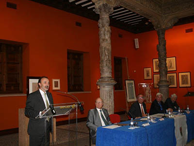
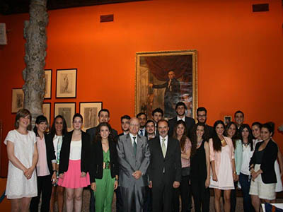

24/06/14 El Excmo. Sr. D. Jesús Gracia, Secretario de Estado de Cooperación internacional y para Iberoamérica, imparte la Lección de clausura del 26º. Programa Máster profesional en Unión Europea.
El acto tuvo lugar en el marco del Patio de la Infanta de Ibercaja, en
Zaragoza, presidido por el Presidente de Ibercaja, Excmo. Sr. D. Amado
Franco, y contó con la asistencia del Excmo. Sr. D. Gustavo Alcalde,
Delegado del Gobierno en Aragón.

Integrantes de la Promoción Mario Draghi (26º. Programa Máster en
Unión Europea) posan con el Excmo. Sr. D. Jesús Gracia, Secretario de Estado
de Cooperación internacional y para Iberoamérica, tras su Lección de
clausura del citado Programa Máster.
